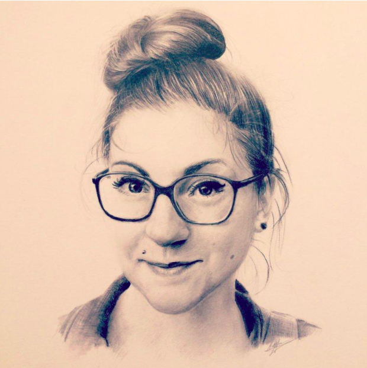
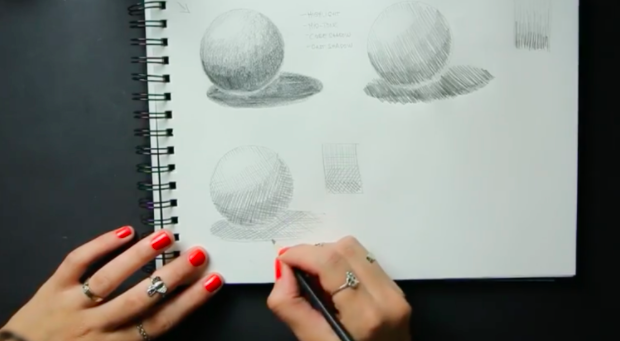
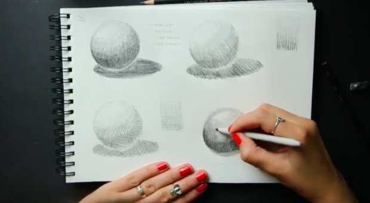
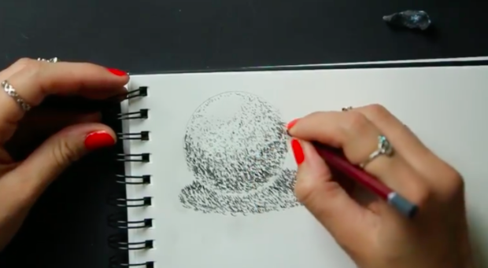
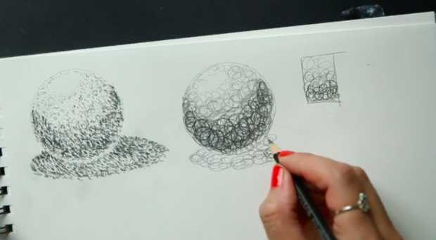
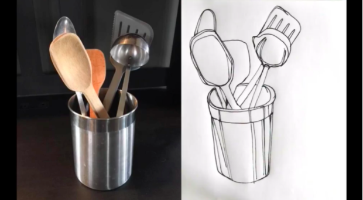

Here, you can also learn pencil drawing!!!
This is for Graphit Pencil!!!
Pencil Drawing
Pencil art may sound simple, but it’s an art form that can be used to create incredibly detailed and realistic compositions. To get started, you don’t need many materials, but you can benefit from a foundational knowledge of pencil drawing techniques. Armed with these techniques, you will be able to add texture, detail, light, and shading to your creations.
Below, finds a comprehensive guide to pencil drawing techniques, as well as everything else you’ll need to get started, from basic drawing materials to a list of ideas for your next piece of pencil art.
Pencil Drawing Techniques
How to Hold a Pencil When Drawing
Before you get started, it’s helpful to learn how to hold a pencil when drawing. There are several different grips you can use to achieve different effects. A traditional grip—the grasp you use when writing—is the most common and natural way to hold a pencil.
You can also opt to hold the pencil further away from the tip, but still with a traditional grip. This will give you a wider range of motion to make longer, looser marks. Or, you might grip closer to the tip of the pencil, using your index finger to press the point of the graphite onto the paper. This can give you leverage to quickly fill in areas of your drawing with dark marks.
As you practice, you’ll find that different pencil grips will be useful for different pencil drawing techniques and types of compositions. Now, with a pencil in hand, you can move on to foundational pencil drawing techniques.
-
Hatching
The technique of hatching consists of filling in areas of a drawing with multiple parallel lines to create the illusion of texture, shadow, and form. You can achieve a more intense effect by increasing the number of lines and their proximity to each other. In other words, the more lines and the closer you draw them together, the darker an area you’ll create.
Hatching can be done in a variety of ways—vertical hatching, horizontal hatching, cross-hatching, or expressive—to achieve different effects.
-
Stumping
A technique used primarily for shading, stumping refers to the process of smudging elements of your drawing with a stump (a drawing tool made of paper tightly wound into a stick), a soft cloth, or even your finger. You can use this technique to create smooth, evenly blended areas of a drawing, or you can choose to incorporate more movement. For example, by smudging in small, circular motions, you can create a visually interesting texture for trees or shrubs.
-
Stippling
When stippling, positioning more dots closer together can create the appearance of a shadow.With stippling, you create texture or shadow by drawing a series of dots. Similar to hatching, the more and closer together the dots, the darker an area you’ll create.
-
Scribbling
The pencil drawing technique demonstrated here is referred to as scribbling, or circulars—a series of random marks to generate dark or shadowed areas or a drawing.As silly as it may sound, scribbling is considered a pencil drawing technique. And it’s just as free-form as what you are probably picturing. Scribbling, alternatively known as circulars, simply consists of moving your pencil in random formations across the page. Like with the other techniques, the closer you make the marks, the denser and darker of an area you’ll create.
-
Contour Lines
The pencil drawing technique demonstrated here is referred to as scribbling, or circulars—a series of random marks to generate dark or shadowed areas or a drawing.As silly as it may sound, scribbling is considered a pencil drawing technique. And it’s just as free-form as what you are probably picturing. Scribbling, alternatively known as circulars, simply consists of moving your pencil in random formations across the page. Like with the other techniques, the closer you make the marks, the denser and darker of an area you’ll create.
Pencil Drawing Supplies
If you are just getting started with pencil drawing, you’re in luck—all the materials you need are easily accessible and affordable. Here’s what you need:
- Graphite pencils
- Drawing paper or sketchpad
- Erasers
- Pencil sharpener
-
Graphite Pencils

Drawing pencils, or graphite pencils, are graded on the graphite scale (or HB scale), which measures the hardness/softness of the lead. On the HB scale, B stands for black. The higher the number, the softer the lead—so the darker (or blacker) the mark. H stands for hardness. The higher the number that accompanies the H, the harder the lead and lighter the mark. A pencil rated HB would fall right in the middle of the grading system—theoretically equivalent to a No. 2 pencil.
However, there is no industry standard for the grades between different brands, so whatever brand of pencil you choose, it’s important to get to know the individual drawing pencils in that set. -
Drawing Paper or Sketchpad

You can certainly use plain printer paper for practice drawing. However, at some point, you may want to purchase paper or a sketchpad that’s better suited for pencil drawing. A heavier weight paper, for example, can better handle more erasure and constant pressure from your pencil. A thinner paper—like printer paper—is more prone to tearing.
When it comes to texture, a smooth to medium texture is ideal for graphite pencil drawings. A more textured paper will pick up blacker marks, but will make it more difficult to add lighter, nuanced detail to your drawings. -
Erasers

Most artists use gum erasers, kneaded erasers, or vinyl erasers. Gum erasers are the softest, while vinyl erasers are the firmest. The eraser you choose can depend on your personal preference, or it may vary by project.
-
Pencil Sharpener

Once you have your materials and a good knowledge of pencil drawing techniques, you’ll be ready to get started.